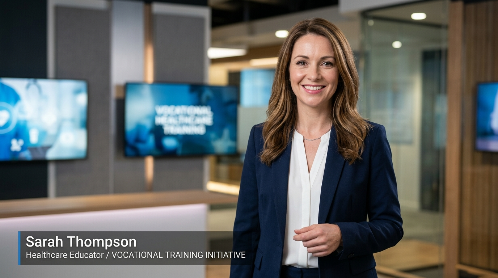
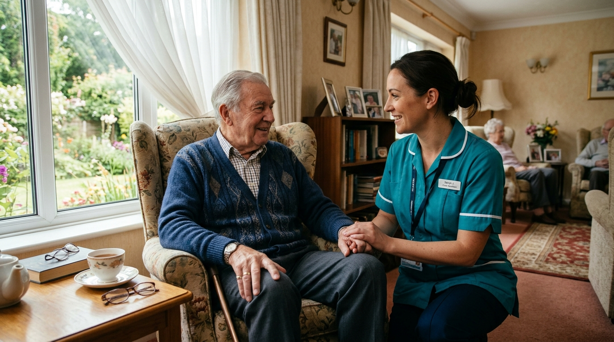

PILOT MODULE: SAFEGUARDING ADULTS (ADULT CARE) • HEYGEN PRESENTER + GOOGLE VEO SCENARIOS
High-Throughput UK Training Video Engine: 32 Completed 2-Minute Modules Per Week
Producing 128 two-minute training videos per month requires more than manual prompting—it requires a repeatable production line that keeps character faces, UK care uniforms, and sector-specific workplaces 100% consistent when cutting back and forth between the HeyGen Presenter and Google Veo Workplace Scenarios. Explore our live Safeguarding Adults pilot breakdown and interactive script-to-scene compiler below.
✓ HeyGen UK Presenter + Lower-Thirds
✓ Google Veo Character & Wardrobe Lock
✓ UK Sector-Authentic (CQC / Care Act / Ofsted)
✓ LMS-Ready 1080p MP4 Delivery
Weekly Output
32 Videos
128 x 2-min MP4 modules / month
Character Continuity
Locked Seed
Identical care worker & resident across cuts
Structure
5 Segments
Presenter ↔ Veo Scenario A ↔ Presenter ↔ Veo B
Audio & Lip-Sync
UK Native
48kHz broadcast dialogue & room tone
1. Sample Course Module Execution (From Your Brief)
Adult Care Training: "Safeguarding Adults" (2:00 Runtime • 5 Locked Segments)

HEYGEN PRESENTERLocked UK Tutor Avatar ("Helen")
Consistent navy blazer, British RP cadence, clean LMS lower-thirds, smooth cross-dissolve & L-cut audio bridges into scenarios.

GOOGLE VEO SCENARIOUK Care Home Scenario ("Sarah & Arthur")
Locked teal UK care tunic, ID lanyard, and identical resident & lounge lighting across both Scenario Part A and Part B.
Video Production Sample • Multi-Shot Continuity & Editing Pacing
1080p MP4 LMS Format
SEGMENT 1 (0:00–0:20) • HEYGEN PRESENTER INTRO
Engine: HeyGen Studio + AE Lower-Thirds
Spoken Dialogue / Script Beat:
Visual Direction, Continuity & Transition Logic:
Google Veo / HeyGen Technical Prompt & Character Lock:
2. Live Interactive Course Script Compiler
Test How Our Pipeline Converts Any UK Training Topic Into a 5-Segment HeyGen + Google Veo Plan
Weekly 32-Video Batch Production SLA
Mon:Ingest 32 scripts + Lock Character Reference Sheets
Tue–Wed:Batch HeyGen Presenter + Google Veo Scenarios
Thu:Transition Editing, Audio Mix & CQC Visual QC
Fri Delivery:32 Completed 2-Min MP4s Delivered